Downstream a Shining Wire
Downstream A Shining Wire is: a ruin, a spatial scrapbook, a set for a virtual stage and
the plays that happened upon it. It is an effort at resurrecting the dead shopping mall of
my youth in response to a sense of dwindling commons. Through virtual necromancy my
collaborators and I attempt to resuscitate a space that once provided human connection.
Within this ruin of the future, we build fugitive worlds together, and tell stories inside
stories to keep warm.
The space includes an original musical score by
Ultrademon.
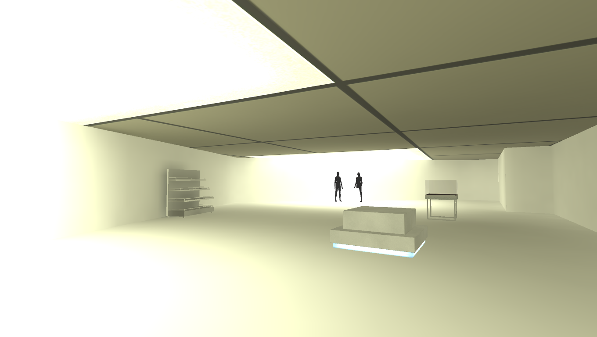
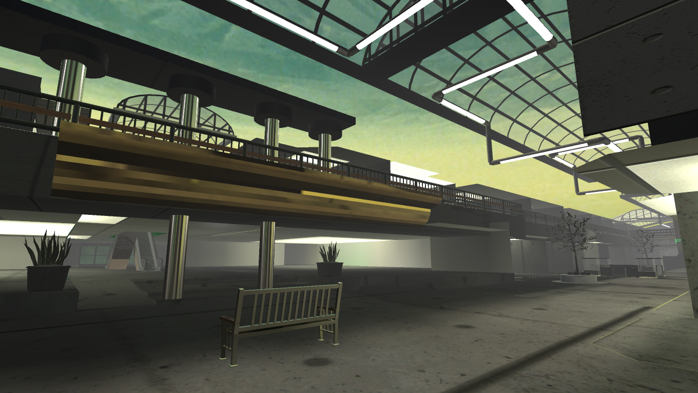
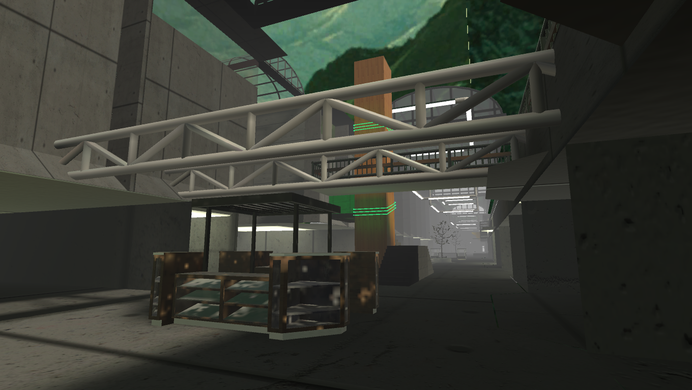
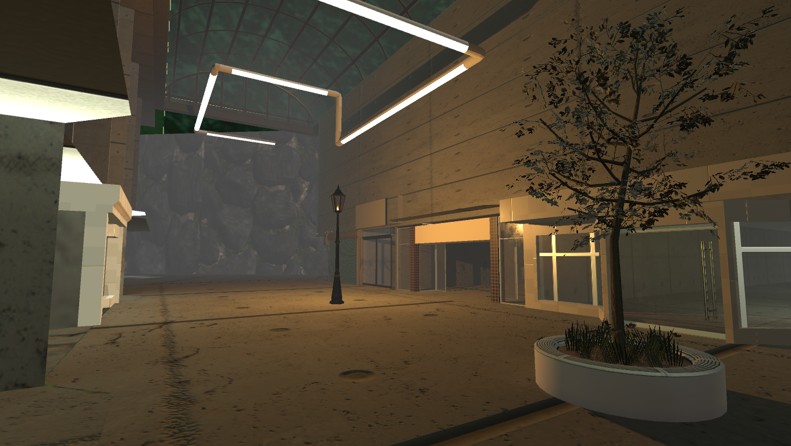
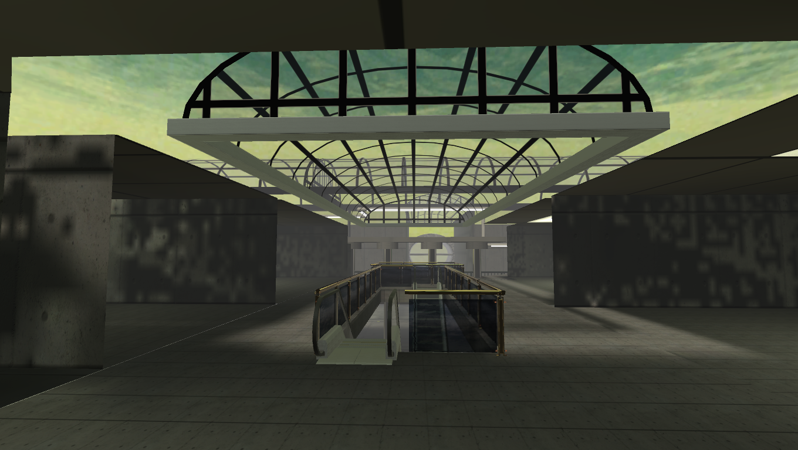
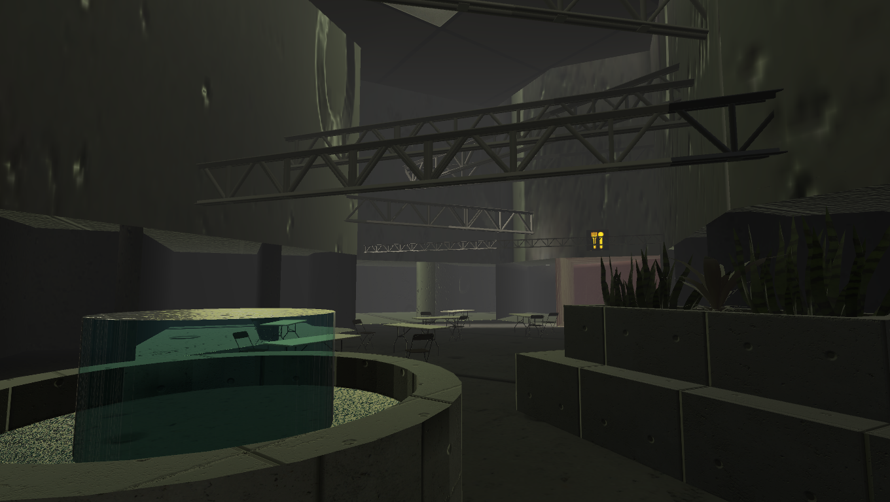
Downstream A Shining Wire is a multi-stage project that began with a 3D recreation of a semblance of the former Cottonwood Mall, a place I spent a lot of time in growing up in Salt Lake City. I started by assembling images and blueprints of the mall, scraped from the internet and government archives, into an interactive scrapbook to visualize the space.
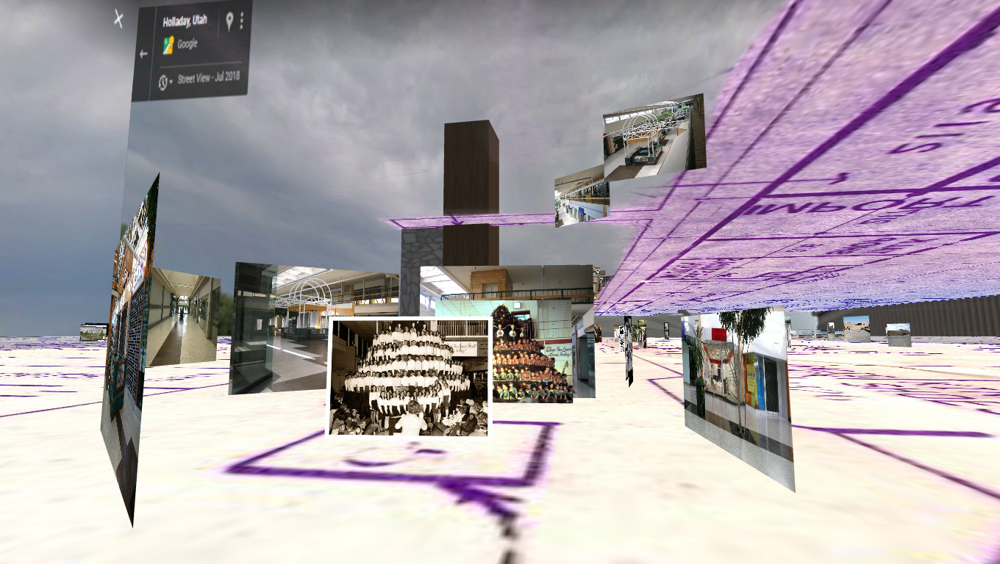
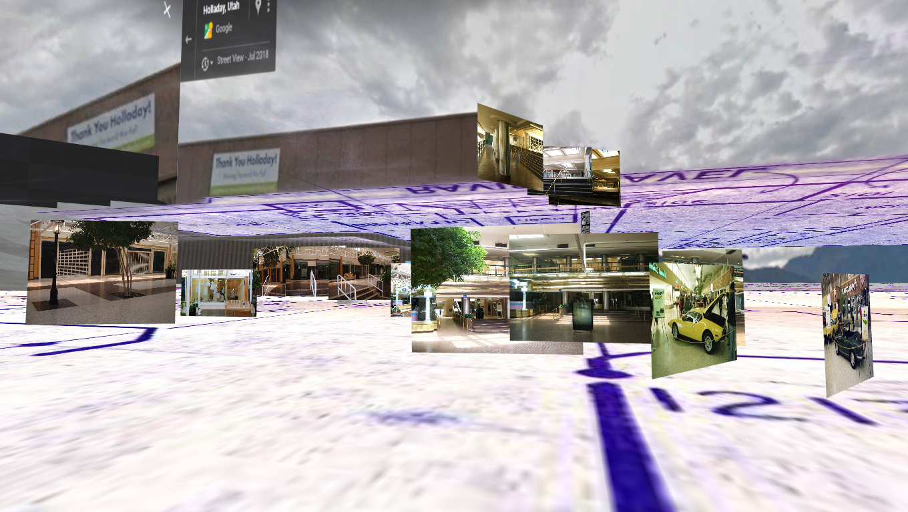
This was used to piece together the rendered mall environ in the Unity engine. Within the
mall we produced "The Black Rabbit Of Inle" and "The Shining Wire", digital videos
recorded in virtual reality. These works were performed by Tabitha Nikolai, Zanna
Kerrigan, Cassandra Gladwin, and sam.
In the videos we role play scenes from Richard Adams’ Watership Down - wherein a warren of
rabbits must seek a new home together after their original home is destroyed by property
developers. The characters recount rabbit myths to inspire each other to keep going.
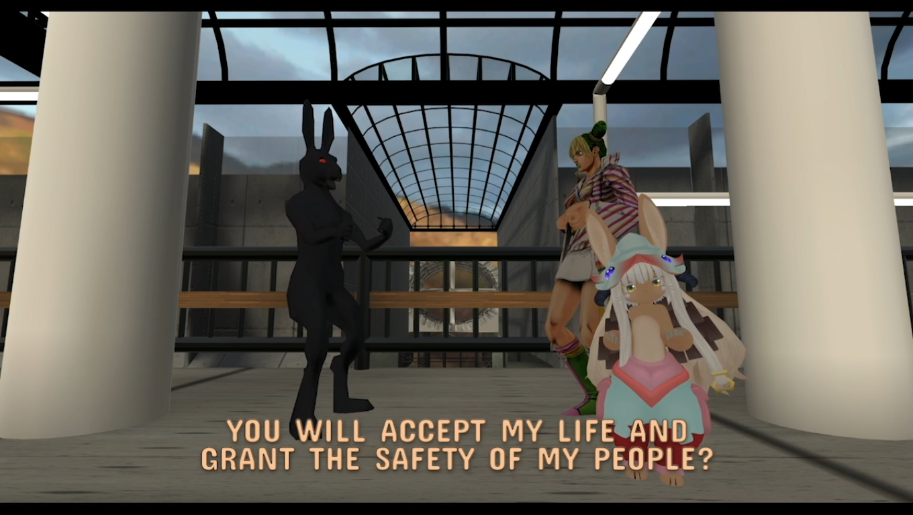

A version of the mall is currently publicly accessible on the VRChat platform. It can be
accessed by creating an account and searching for the world Downstream A Shining Wire in
the "Worlds" menu. It is made public in this form so that anyone who can access VRChat can
likewise use the revised mall for their own commons, and their own stories.
Downstream A Shining Wire was exhibited at Open Signal in Portland, Oregon (2019)
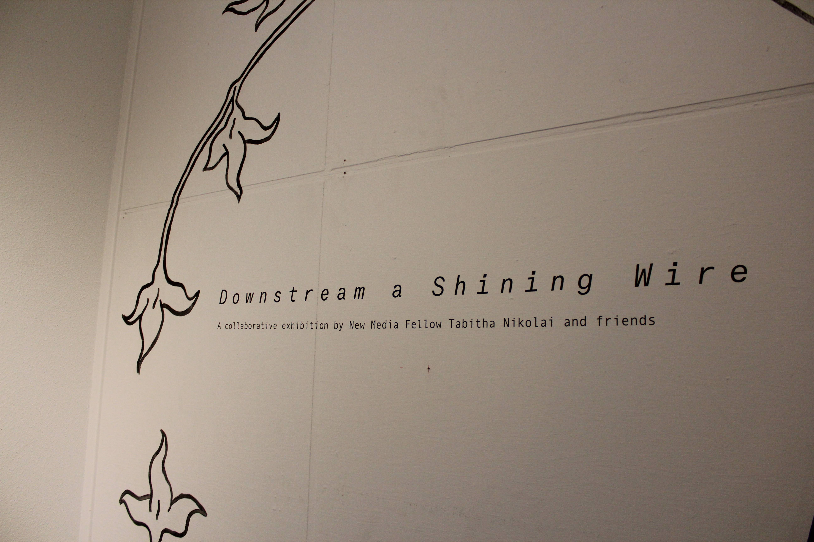
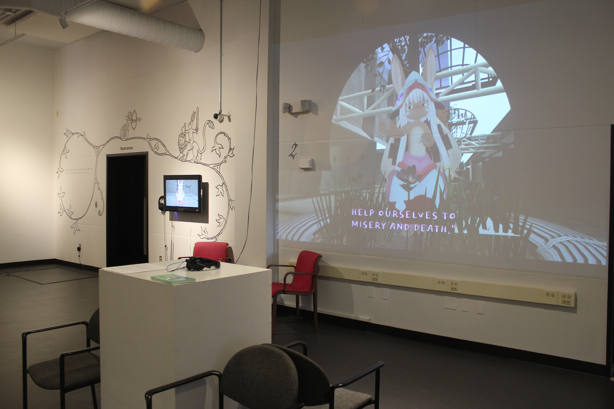
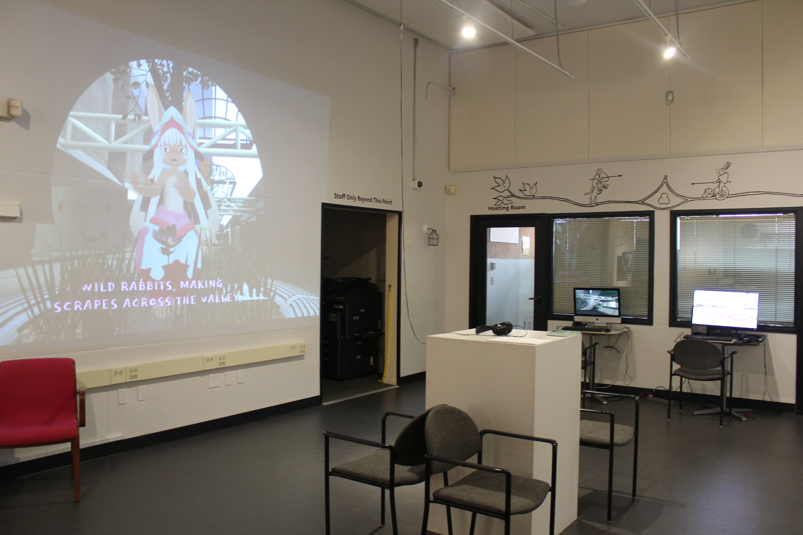
Downstream A Shining Wire was exhibited as part of the show
CARRIAGE at Vacation NYC
presented by
HOLDING Contemporary
in New York (2019)
Tapestry and murals painted in collaboration with Kelly Thomas.
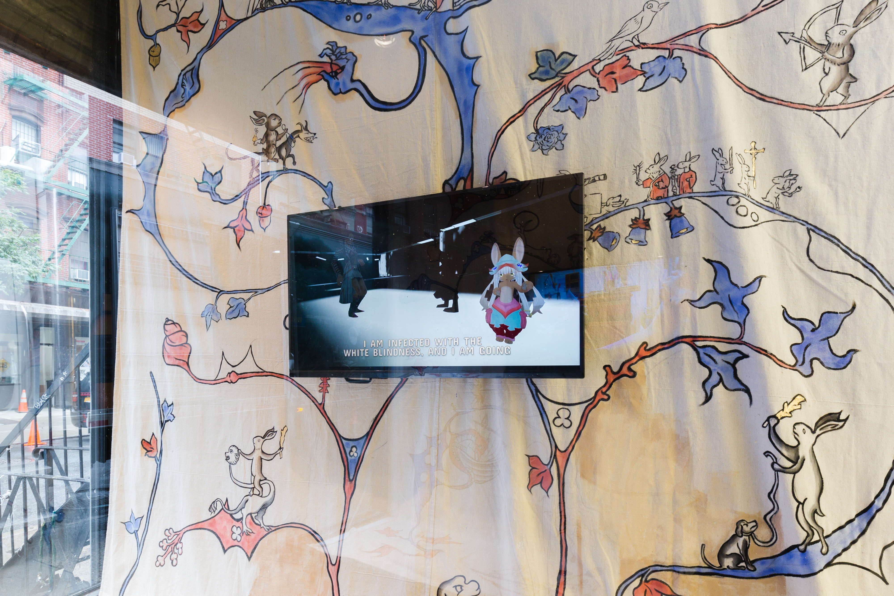
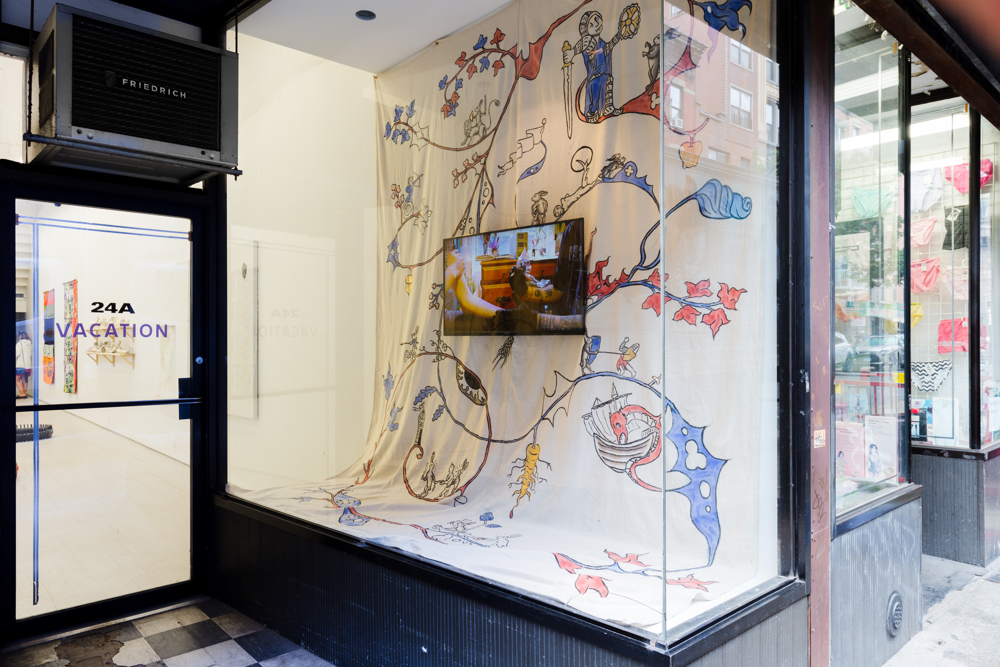
This work was made possible in part by support from the Open Signal New Media Fellowship, and the Portland Institute for Contemporary Art Creative Exchange Lab.